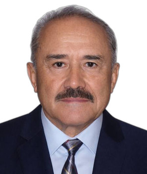

Profile
Iouldouz Raguimov was a sessional associate professor, on a long-service teaching appointment, in the Department of Mathematics and Statistics at York University in Toronto from 2015 to 2024. He received a PhD in applied mathematics from the Dorodnitsyn Computing Centre of the USSR Academy of Sciences in 1981. The thesis is The Best Guaranteed Result Principle in a Class of Operations Research Problems, supervised by N. N. Moiseev. He received an MSc in applied mathematics and computer science from Azerbaijan State University, now Baku State University, in 1975. In 1991 he received the science title Senior Research Fellow in applications of computational techniques, mathematical modeling, and mathematical methods.
Work experience
Department of Mathematics and Statistics, York University, Toronto, Canada
2015–2024Sessional Associate Professor, long-service teaching appointment
Department of Mathematics and Statistics, York University, Toronto, Canada
2000–2015Sessional Assistant Professor
Department of Mathematics, University of Toronto at Mississauga, Canada
1999–2000Tutorial leader
Computer Science Department, University of Toronto at Mississauga, Canada
September–December 2000Tutorial leader
RiskLab, Department of Mathematics, University of Toronto at Mississauga, Canada
1998–1999Project associate
Department of Computational Mathematics, Baku State University, Baku, Azerbaijan
1994–1996Associate Professor
Baku State University, Baku, Azerbaijan
1992–1994Head of the Laboratory of Information and Computational Systems
Department of Automatic Control, Huazhong University of Science and Technology, Wuhan, China
1991–1992Scientific research fellow
- USSR–China scientific exchange
Azerbaijan State University, Baku, Azerbaijan
1988–1991Head of the Laboratory of Problems of Higher and Post-Secondary Education
Scientific Research Centre, Azerbaijan State University, Baku, Azerbaijan
1984–1988Vice director
Scientific Research Centre, Azerbaijan State University, Baku, Azerbaijan
1982–1984Head of department
Education
PhD
1981Applied mathematics. Thesis: The Best Guaranteed Result Principle in a Class of Operations Research Problems. Supervisor: N. N. Moiseev. Committee: V. V. Fedorov and A. V. Lotov
Dorodnitsyn Computing Centre, USSR Academy of Sciences, Moscow
MSc
1975Applied mathematics and computer science
Azerbaijan State University, now Baku State University, Baku, Azerbaijan
Senior Research Fellow
1991Science title in applications of computational techniques, mathematical modeling, and mathematical methods to research
Moscow, USSR
Grants & projects
- 2008 — On decision-making in a stochastic environment — York University research grant
- 2003 — Method of optimization on time series in decision-making in operations with stochastic parameters — York University research grant
Teaching
- 2000–2024 — Operations research, combinatorial and linear optimization, mathematical theory of interest, probability, linear algebra, calculus, discrete mathematics, and mathematics for management and the life sciences. Course codes include MATH 4170, 3172, 3171, 3170, 2280, 2030, 2580, and 1505 — York University, Toronto, Canada
WAAS / DAAB activity
- September 2024 — 1st Forum of Azerbaijani Scientists Living Abroad, Baku, Azerbaijan — Ətraf mühit nümunələrinin proqnozlaşdırılmasında və insan müdaxilələrinin təsirinin qiymətləndirilməsində riyazi modellərin rolu
Research metrics
- Scientific papers — More than 25 — Self-reported
- Years of teaching — 30 — Self-reported
Publications
Books and textbooks
1. Moiseev, N. N. How Far It Is to Tomorrow. English translation by Iouldouz Raguimov and Robert G. Burns. Birkhäuser, 2022. https://doi.org/10.1007/978-3-030-96651-5.
Peer-reviewed journal articles
1. Aliev, F. A., Mutallimov, M. M., Askerov, I. M., & Raguimov, I. Asymptotic method of solution for a problem of construction of optimal gas-lift process modes. Mathematical Problems in Engineering, 2010, vol. 2010, pp. 1–11.
2. Raguimov, I. On the duality of linear multi-objective models. Reports of the Azerbaijan Academy of Sciences, 4, 1994. In Azerbaijani.
3. Gasanov, I. I., & Raguimov, I. A control problem in a two-level hierarchical system. USSR Computational Mathematics and Mathematical Physics, 1980, vol. 5, pp. 49–62.
Conference papers and abstracts
1. Raguimov, I., & Gasanov, I. I. On efficiency of solutions of a stochastic optimal control problem with discrete time. Proceedings of the Second International Conference on Advanced Communications and Computation, INFOCOMP 2012, pp. 1–4. ISBN 978-1-61208-226-4.
2. Raguimov, I., & Gasanov, I. I. On an algorithm of financial portfolio control by the method of optimization on time series. Proceedings of CIMCA 2004, pp. 511–519. ISBN 1740881885.
3. Raguimov, I., & Gasanov, I. I. Experimental analysis of the method of optimization on time series using a mathematical model of a financial market. Proceedings of the 4th International Conference on High Technology Control Systems, HTCS 2004, Tver, Russia, 24–25 May 2004. 6 pages. In Russian.
4. Raguimov, I., & Gasanov, I. I. On solution of a stochastic control problem by the method of optimization on time series. Proceedings of the 2003 Hawaii International Conference on Statistics and Related Fields, 5–9 June 2003. 7 pages. ISSN 1539-7211.
5. Raguimov, I. On decision making in operations with stochastic factors. Proceedings of CIMCA 2001, pp. 580–587. ISBN 0858898470.
6. Raguimov, I. Finding of the deregulated prices by multi-person decision-making with a multi-objective approach. 7th IFAC/IFORS/IIASA Conference on Modeling and Control of National Economies, Beijing, 1992, pp. 138–142.
Invited talks and conference participation
- May 2024 — ADA University, Baku, Azerbaijan — Presentation — The Best Guaranteed Result Principle and Decision-Making in Operations with Stochastic and Uncertain Factors
- September 2015 — Fields Institute, University of Toronto, Canada — Presentation — Best guaranteed result principle and decision making in operations with stochastic factors and uncertainty
- July 1994 — NATO Advanced Study Institute, Stony Brook, New York, United States — Presentation — The game-theoretical approach to modeling of international economic cooperation